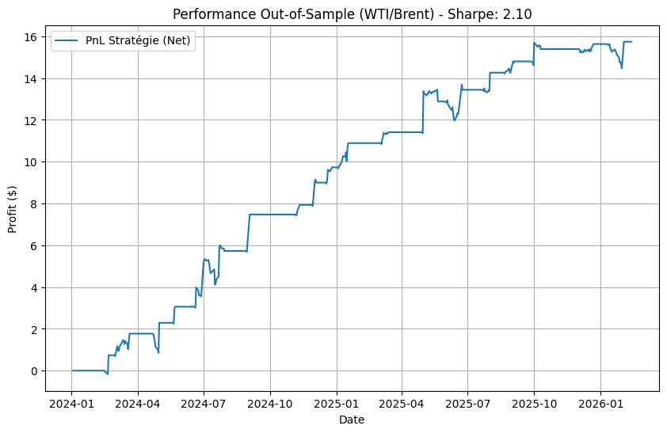

WTI/Brent Statistical Arbitrage Strategy
Augustin Debove
Quantitative research project: Implementation of a mean-reversion strategy on energy futures spreads.
This repository contains a systematic algorithmic trading strategy exploiting the statistical co-integration between WTI (NYMEX) and Brent (ICE) Crude Oil futures. The project demonstrates a full quantitative pipeline, from raw data ingestion and synchronization to risk-adjusted performance analysis.
Technical Highlights#
Data Engineering and Synchronization: The framework implements a custom alignment logic to handle asynchronous trading calendars. By reconciling NYMEX and ICE exchange holidays, the backtest eliminates data stale-pricing bias.
Mean-Reversion Engine: Signals are generated via a dynamic Z-Score calculated on a rolling lookback window. This normalizes the spread volatility and identifies statistically significant entry and exit points.
Robustness vs. Overfitting: Parameter selection (window size and thresholds) was conducted using stability cluster analysis rather than raw historical optimization. This ensures higher generalization capabilities on unseen data.
Risk Management: A hard statistical stop-loss is integrated at \(|Z| > 3.5\) to protect the portfolio against structural regime shifts or geopolitical shocks.
Out-of-Sample Results (Jan 2024 - Feb 2026) The model was validated on strictly unseen data to confirm its predictive power:
Sharpe Ratio: 2.17
Net PnL per Barrel: $14.60 (inclusive of estimated transaction costs)
Execution Logic: Entry at \(|Z| > 1.9\), Mean-reversion exit at \(|Z| < 0.5\).
import pandas as pd
import numpy as np
import yfinance as yf
from datetime import datetime
import matplotlib.pyplot as plt
########### PART 1 : OPTIMIZATION ###########
tickers = ['CL=F', 'BZ=F']
raw_data = yf.download(tickers, start="2024-01-01", end="2026-01-01", progress=False)['Close']
data = pd.DataFrame() # Data Cleaning and Alignment
data['WTI'] = raw_data['CL=F']
data['Brent'] = raw_data['BZ=F']
data.dropna(inplace=True) # Aligning TS: we only keep observations where both NYMEX (WTI) and ICE (Brent) markets are open to avoid non-synchronous data bias.
profit = {} # Grid search for the best Z-score and the optimal rolling window
sharpe = {}
drawdown = {}
data['spread'] = data['WTI'] - data['Brent'] # Computation of the spread价差
data['spread_diff'] = data['spread'].diff()
transaction_cost = 0.05 # transaction cost per unit, covering spread and transaction fees
# Loop over windows from 5 to 50 days
for i in range(5, 51, 5):
mean = data['spread'].rolling(i).mean() # Pre-calculate rolling stats for this window to speed up the loop
std = data['spread'].rolling(i).std()
for k in range(10, 401, 5): # Loop over Z-score thresholds from 0.1 to 4.0
z = k / 100
temp_Z = (data['spread'] - mean) / std # Z-score calculation
# 1. Initialize signal with NaN
signal = pd.Series(np.nan, index=data.index)
# 2. Entries
signal.loc[temp_Z < -z] = 1 # Long Spread
signal.loc[temp_Z > z] = -1 # Short Spread
# 3. Exits (Mean Reversion)
# We exit when Z-score comes back to normal (between -0.5 and 0.5)
signal.loc[temp_Z.abs() < 0.5] = 0
# 4. Stop Loss (Optional but recommended for optimization realism)
# If Z-score explodes > 4, we cut (Black Swan protection)
signal.loc[temp_Z.abs() > 4] = 0
# 5. Position Filling
# We propagate the signal until a new condition (Exit or Reverse) is met
pos = signal.ffill().fillna(0)
# Computation of the costs
trades = pos.diff().fillna(0).abs()
total_costs = trades * transaction_cost
# Net performance computation
strat_return = (pos.shift(1) * data['spread_diff']) - total_costs
profit_final = strat_return.sum()
# Storing of the final profit
profit[(i, z)] = profit_final
# Sharpe Ratio Computation
if strat_return.std() != 0:
# Annulized Sharpe
s = (strat_return.mean() / strat_return.std()) * np.sqrt(252)
else:
s = 0
sharpe[(i, z)] = s
# Max Drawdown Computation
equity_curve = strat_return.cumsum()
max_dd = (equity_curve - equity_curve.cummax()).min()
drawdown[(i, z)] = max_dd
df_opti = pd.Series(profit).reset_index() # Converting profit dictionary to a DataFrame
df_opti.columns = ['Fenetre', 'Z_score', 'Profit']
df_dd = pd.Series(drawdown).reset_index() # Converting Drawdown dictionary to a DataFramee
df_dd.columns = ['Fenetre', 'Z_score', 'Drawdown']
df_opti = df_opti.join(df_dd['Drawdown'])
df_risk = pd.Series(sharpe).reset_index() # Converting Sharpe dictionary to a DataFrame
df_risk.columns = ['Fenêtre', 'Z_score', 'Sharpe']
df_opti = df_opti.join(df_risk['Sharpe'])
# Displaying the best results
print("\nTOP 5 BY PROFIT")
top_5_profit = df_opti.sort_values(by='Profit', ascending=False).head(5)
print(top_5_profit)
print("\nTOP 5 BY SHARPE RATIO")
top_5_sharpe = df_opti.sort_values(by='Sharpe', ascending=False).head(5)
print(top_5_sharpe)
# Automatic link: find the best parameters to use in Part 2
best_row = df_opti.sort_values(by='Sharpe', ascending=False).iloc[0]
best_window = int(best_row['Fenetre'])
best_z_entry = best_row['Z_score']
########### PART 2 : OUT-OF-SAMPLE TEST ###########
# 1. Fetching data that is unknown for the model (Out-of-Sample)????
end_date = datetime.now().strftime('%Y-%m-%d')
raw_data_oos = yf.download(tickers, start="2024-01-02", end=end_date, progress=False)['Close']
# 2. DATA CLEANING AND ALIGNMENT
data_oos = pd.DataFrame()
data_oos['WTI'] = raw_data_oos['CL=F']
data_oos['Brent'] = raw_data_oos['BZ=F']
# Aligning time series: we only keep observations where both NYMEX (WTI) and ICE (Brent) markets are open.
data_oos.dropna(inplace=True)
# 3. PARAMETERIZATION: These are automatically assigned from the optimization above
stop_loss_z = 3.5
transaction_cost = 0.05
# 4. INDICATORS
data_oos['spread'] = data_oos['WTI'] - data_oos['Brent']
data_oos['spread_diff'] = data_oos['spread'].diff()
# Moving calculations
mean_oos = data_oos['spread'].rolling(window=best_window).mean()
std_oos = data_oos['spread'].rolling(window=best_window).std()
data_oos['z_score'] = (data_oos['spread'] - mean_oos) / std_oos
# Step A: Initialize signal container with NaN (Empty)
data_oos['position'] = np.nan
# Step B: Entry Signals
# Long if Z < -best_z_entry
data_oos.loc[data_oos['z_score'] < -best_z_entry, 'position'] = 1
# Short if Z > best_z_entry
data_oos.loc[data_oos['z_score'] > best_z_entry, 'position'] = -1
# Step C: Exit Conditions (Mean Reversion): Exit when Z returns inside [-0.5, 0.5].
data_oos.loc[data_oos['z_score'].abs() < 0.5, 'position'] = 0
# Step D: Stop Loss (Risk Management): Force exit if Z explodes (> 3.5)
data_oos.loc[data_oos['z_score'].abs() > stop_loss_z, 'position'] = 0
# Step E: Propagation (The fix)
data_oos['position'] = data_oos['position'].ffill()
# Step F: Handle the very beginning (before first signal)
data_oos['position'] = data_oos['position'].fillna(0)
# 6. PERFORMANCE CALCULATION
trades_oos = data_oos['position'].diff().fillna(0).abs()
costs_oos = trades_oos * transaction_cost
# PnL strategy (using shift(1) to avoid look-ahead bias)
data_oos['strategy_return'] = (data_oos['position'].shift(1) * data_oos['spread_diff']) - costs_oos
# Cumulative Returns
data_oos['cum_profit'] = data_oos['strategy_return'].cumsum()
# 7. VISUALIZATION & METRICS
final_pnl = data_oos['cum_profit'].iloc[-1]
sharpe_ratio = (data_oos['strategy_return'].mean() / data_oos['strategy_return'].std()) * np.sqrt(252)
print(f"\n RESULTS (2024 - Today) ")
print(f"Net PnL per Barrel : {final_pnl:.2f} $")
print(f"Sharpe Ratio : {sharpe_ratio:.2f}")
# Chart
plt.figure(figsize=(10, 6))
plt.plot(data_oos.index, data_oos['cum_profit'], label='PnL Stratégie (Net)')
plt.title(f"Performance Out-of-Sample (WTI/Brent) - Sharpe: {sharpe_ratio:.2f}")
plt.xlabel("Date")
plt.ylabel("Profit ($)")
plt.legend()
plt.grid(True)
plt.show()
/tmp/ipykernel_23616/3274917961.py:8: FutureWarning: YF.download() has changed argument auto_adjust default to True
raw_data = yf.download(tickers, start="2024-01-01", end="2026-01-01", progress=False)['Close']
TOP 5 BY PROFIT
Fenetre Z_score Profit Drawdown Sharpe
246 20 0.55 19.210019 -1.239998 2.064370
251 20 0.80 18.980021 -1.310002 2.051578
252 20 0.85 18.830002 -1.259999 2.035092
243 20 0.40 18.530015 -1.249997 1.989195
244 20 0.45 18.530015 -1.249997 1.989195
TOP 5 BY SHARPE RATIO
Fenetre Z_score Profit Drawdown Sharpe
429 30 1.80 15.630005 -1.480005 2.222741
655 45 1.25 17.210014 -1.519997 2.214097
432 30 1.95 15.119997 -1.480005 2.173248
431 30 1.90 15.119997 -1.480005 2.173248
433 30 2.00 15.119997 -1.480005 2.173248
/tmp/ipykernel_23616/3274917961.py:113: FutureWarning: YF.download() has changed argument auto_adjust default to True
raw_data_oos = yf.download(tickers, start="2024-01-02", end=end_date, progress=False)['Close']
RESULTS (2024 - Today)
Net PnL per Barrel : 15.74 $
Sharpe Ratio : 2.10
